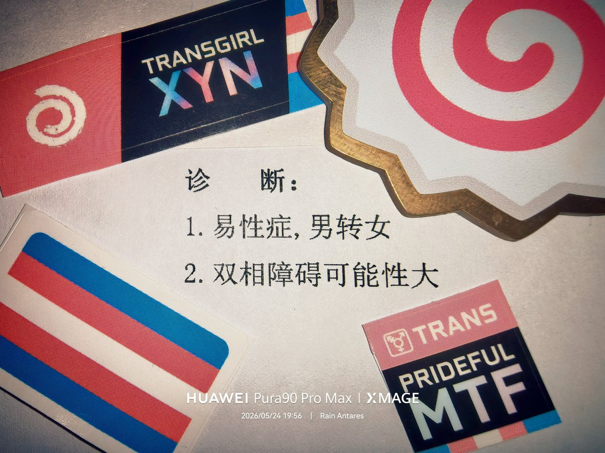

沐桃
@xiey57828
@Rain_Antar1121 这是小证嘛，我也有一个诊断易性症和双相😰这个好像说了自己想看易性症都会写上去吧…

Rain Antares🏳️⚧️🍥
@Rain_Antar1121
小证哇…🥰属于咱的小证哦…
这么久了终于也是品牌药娘啦）唔拿到手的那一刻感觉挺平淡…但是心底涌起了一份好坚实的安心🥹
之后两天，每当能坐下来，咱都忍不住把这几行薄墨小心翼翼从文件夹里请出来轻轻摸摸…就像Henry Adams看着手中的百万英镑呀，但这张是属于我自己的无价之宝哦ヾ(๑╹ヮ╹๑)ﾉ” https://t.co/1qN0Kohaxp